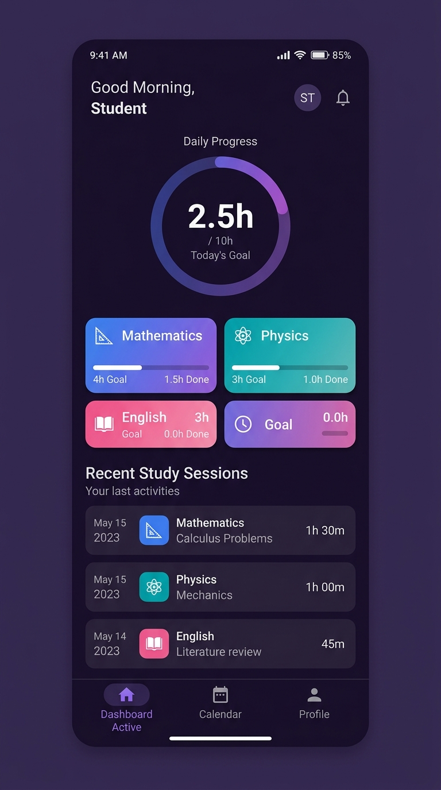
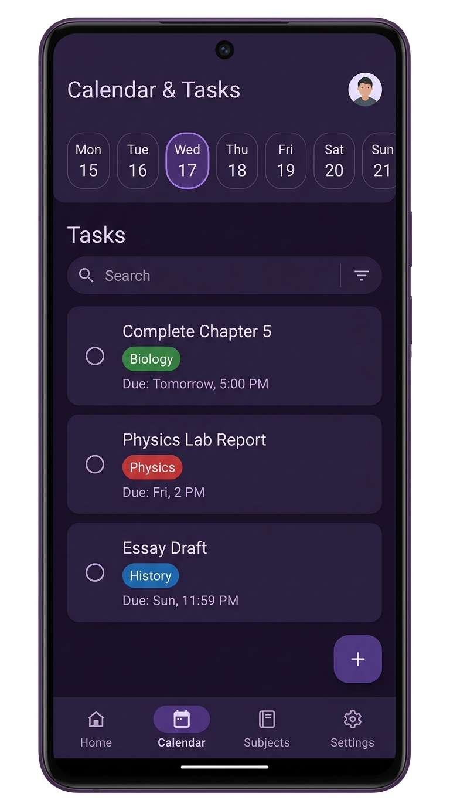
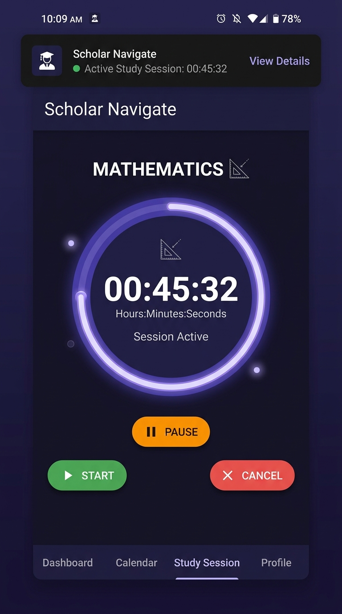

← All workPROJECT 03 / 11
SELECTED WORK / OMJ LABS
ScholarNavigate.
A clearer week for students.
Student task management designed to make planning, prioritization, and progress easier to keep up with.
01 / THE PROJECT
What it does.
A student task management app designed to make planning and prioritization easier. It focuses on everyday progress rather than complicated productivity rituals.
BUILT WITH
ComposeFirebaseHilt
02 / INTERFACE PREVIEW
Inside the flow.
Screenshots from the project repository, followed by concept screens showing the main flows.



OMJ LABS / 03Plan the week
OMJ LABS / 03Prioritize tasks
OMJ LABS / 03Track progress